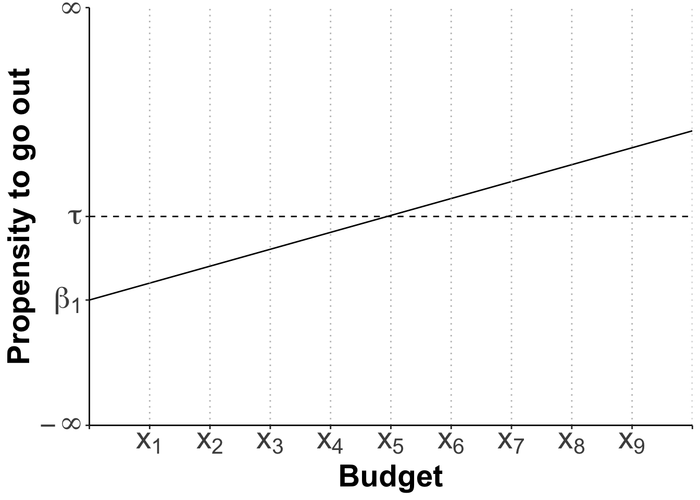

9 Linear Regression
9.1 Content
Introduction
Data are taken from https://electionstudies.org/data-center/2020-exploratory-testing-survey/ to model the feelings towards Donald Trump in the lead-up to the presidential election 2020.
Bivariate Linear Regression
The Theory
The Application
We are using the “2020 Exploratory Testing Survey”
Load the ANES data set
Min. 1st Qu. Median Mean 3rd Qu. Max.
0.00 0.00 40.00 44.59 80.00 999.00 This is no good, as the variable is bounded between 0 and 100. In fact 999 is a placeholder for missing data throughout the data set. We need to replace this with NAs.
If we look at the summary again, everything looks fine now:
Min. 1st Qu. Median Mean 3rd Qu. Max. NA's
0.00 0.00 40.00 42.42 80.00 100.00 7 By the way, had you just wanted to replace this in one variable, for example only in fttrump1, you could have called:
Norris and Inglehart (2016) have argued that:
populist support in Europe is generally stronger among the older generation, men, the less educated, the religious, and ethnic majorities, patterns confirming previous research.
Let’s see if this also applies to presidential elections in the US. We first look at the question: “Do older people rate Trump higher than younger people?”. Our independent variables is age.
Min. 1st Qu. Median Mean 3rd Qu. Max.
18.00 34.75 49.00 48.87 63.00 110.00 Let’s evaluate the relationship through a scatter plot with a line of best fit:

There is a positive relationship. We can calculate the exact numerical nature of that relationship as follows:
We start by specifying an object into which we store the results. Then we call lm which means linear model. Our dependent variable fttrump1 is listed first, and then after a tilde the independent variable, age. Finally, we tell R which data set to use. We can then print the result, by calling model1.
Call:
lm(formula = fttrump1 ~ age, data = anes)
Coefficients:
(Intercept) age
31.6837 0.2197 How would we interpret these results?
- At an age of zero, a person would rate Trump at 31.68 on average. This of course makes little sense in anything but a theoretical / mathematical consideration.
- With every additional year of age, a person would rate Trump 0.22 points higher on average.
But are these findings significant at an acceptable significance level? Let’s find out, by getting a more detailed output:
Call:
lm(formula = fttrump1 ~ age, data = anes)
Residuals:
Min 1Q Median 3Q Max
-55.847 -39.152 -0.523 39.258 64.143
Coefficients:
Estimate Std. Error t value Pr(>|t|)
(Intercept) 31.68372 2.14801 14.750 < 2e-16 ***
age 0.21967 0.04157 5.284 1.35e-07 ***
---
Signif. codes: 0 '***' 0.001 '**' 0.01 '*' 0.05 '.' 0.1 ' ' 1
Residual standard error: 38.67 on 3071 degrees of freedom
(7 observations deleted due to missingness)
Multiple R-squared: 0.009011, Adjusted R-squared: 0.008688
F-statistic: 27.92 on 1 and 3071 DF, p-value: 1.35e-07OK, there is a lot more here, and it is worth pausing to go through this step by step. First, R reminds us of the actual formula we have used to estimate the model:

I am ignoring the section on residuals for now, as we don’t need to make our lives more difficult than it needs to be. I will come back to this under the The Classical Linear Assumptions. Now come the coefficients:

The size and direction is of course the same as in our previous output, but this output now contains some additional information about the standard error, the resulting t-value, and the p-value. R is very helpful here, in that it offers us a varying amount of asterisks according to different, commonly accepted levels of significance. 0.05 is standard practice in the social sciences, so we will accept anything with one, or more asterisks. Both our intercept and the slope coefficient are significant at a 95% confidence level, so we have shown that there is a statistical relationship between age and ratings for Trump.
I am omitting the residual standard error for the same reason as before, but let us look at the model fit indicators.

Multiple R-Squared (aka \(R^{2}\)) tells us how much variation in the dependent variable fttrump1 is explained through the independent variable age. \(R^{2}\) runs between 0 and 1, where 1 is equal to 100% of the variation. In our case, we have explained a mere 0.09% of the Trump rating. This is lousy, and we can do a lot better than that. Never expect anything near 100% unless you work with a toy data set from a text book. If you get 60-70% you can be very happy. I will return to Adjusted \(R^{2}\) when in the Section on Multiple Linear Regression.
The F-statistic at the end:
 is a test with the null hypothesis that all coefficients of the model are jointly zero. In our case, we can reject this null hypothesis very soundly, as the p-value is far below the commonly accepted maximum of 5%.
is a test with the null hypothesis that all coefficients of the model are jointly zero. In our case, we can reject this null hypothesis very soundly, as the p-value is far below the commonly accepted maximum of 5%.
9.1.0.0.1 Categorical Independent Variables (aka ‘Dummies’)
Often variables are categorical. One such example is the variable sex which has two categories: male and female.
Min. 1st Qu. Median Mean 3rd Qu. Max.
1.000 1.000 2.000 1.522 2.000 2.000
1 2
1473 1607 Turn this into a factor variable and assign telling labels
Check if this has worked:
Male Female
1473 1607 Let’s estimate the model:
Call:
lm(formula = fttrump1 ~ sex, data = anes)
Residuals:
Min 1Q Median 3Q Max
-46.156 -38.992 -1.156 38.844 61.008
Coefficients:
Estimate Std. Error t value Pr(>|t|)
(Intercept) 46.156 1.009 45.749 < 2e-16 ***
sexFemale -7.165 1.397 -5.129 3.09e-07 ***
---
Signif. codes: 0 '***' 0.001 '**' 0.01 '*' 0.05 '.' 0.1 ' ' 1
Residual standard error: 38.68 on 3071 degrees of freedom
(7 observations deleted due to missingness)
Multiple R-squared: 0.008493, Adjusted R-squared: 0.00817
F-statistic: 26.31 on 1 and 3071 DF, p-value: 3.095e-07How do we interpret this?
- Let’s do the slope coefficient first: a women would rate Trump at 7.16 points less than a man on average. The interpretation of a dummy variable coefficient is done with regards to the reference category. In our case this is “male”. So the effect we observe here is equivalent of moving from “male” to female" and that effect adds 7.16 points.
- This gives you an indication of how to interpret the intercept in this case: The value displayed is how men would rate Trump on average, namely at 46.16 points. All of this is significant at a 95% confidence level.
This effect corroborates the hypothesis advanced by Inglehart and Norris, but the results are not displayed in the most elegant way. The sex these authors made a statement about were men. So we need to change the reference category to “female”.
When we re-estimate the model, we get the effect displayed directly:
Call:
lm(formula = fttrump1 ~ sex, data = anes)
Residuals:
Min 1Q Median 3Q Max
-46.156 -38.992 -1.156 38.844 61.008
Coefficients:
Estimate Std. Error t value Pr(>|t|)
(Intercept) 38.9919 0.9661 40.358 < 2e-16 ***
sexMale 7.1646 1.3969 5.129 3.09e-07 ***
---
Signif. codes: 0 '***' 0.001 '**' 0.01 '*' 0.05 '.' 0.1 ' ' 1
Residual standard error: 38.68 on 3071 degrees of freedom
(7 observations deleted due to missingness)
Multiple R-squared: 0.008493, Adjusted R-squared: 0.00817
F-statistic: 26.31 on 1 and 3071 DF, p-value: 3.095e-07Whilst many categorical variables are binary, of course not all of them are. So how does this work with a categorical variable with 3 or more levels?
9.1.0.0.2 Summary for Bivariate Regression
And that’s it! You have made the first big step to understanding regression output and producing such output yourself. But not only has our age variable been rubbish in explaining Trump ratings, but also explanations in the real world are never mono-causal. There are always multiple influences working at the same time, and we need to set up our statistical model to take this complexity into account. Which brings us to the next step: multiple regression.
Multiple Linear Regression
The Theory
The Application
The Classical Linear Assumptions
Functional Form
Fixed x-values
Independence of error term from x, Ramseys Reset Test
Zero Mean Value of Disturbance
Homoscedasticity
No Autocorrelation between Errors
No Multicollinearity
The Number of Observations
… n must be greater than the Number of Parameters to be estimated
9.2 Summary
OLS is an acronym for “Ordinary Least Squares”.
CLM is an acronym for “Classical Linear Model”.
BLUE is an acronym for “Best Linear Unbiased Estimator”.
Functions list
| function | package | description |
|---|---|---|
| c() | base | Combine values/vectors into a vector |
| factor() | base | create a factor |
| library() | base | load an R package |
| summary() | base | NA |
| table() | base | obtain frequency table of a variable/cross-tabulation of two variables |
| mutate() | dplyr | modify/create a column in a data frame |
| aes() | ggplot2 | NA |
| geom_point() | ggplot2 | NA |
| geom_smooth() | ggplot2 | NA |
| ggplot() | ggplot2 | NA |
| lm() | stats | NA |
| relevel() | stats | NA |
| read.csv() | utils | read a csv file to data frame. Specify stringsAsFactors = FALSE to keep all string columns as characters |
9.3 Exercises
- First Exercise
The solutions for the exercises will be available here on 2021-02-18.
9.4 References
Inglehart, Ronald F. and Norris, Pippa (2016) Trump, Brexit, and the Rise of Populism: Economic Have-Nots and Cultural Backlash. HKS Working Paper No. RWP16-026, Available at SSRN: https://ssrn.com/abstract=2818659 or http://dx.doi.org/10.2139/ssrn.2818659